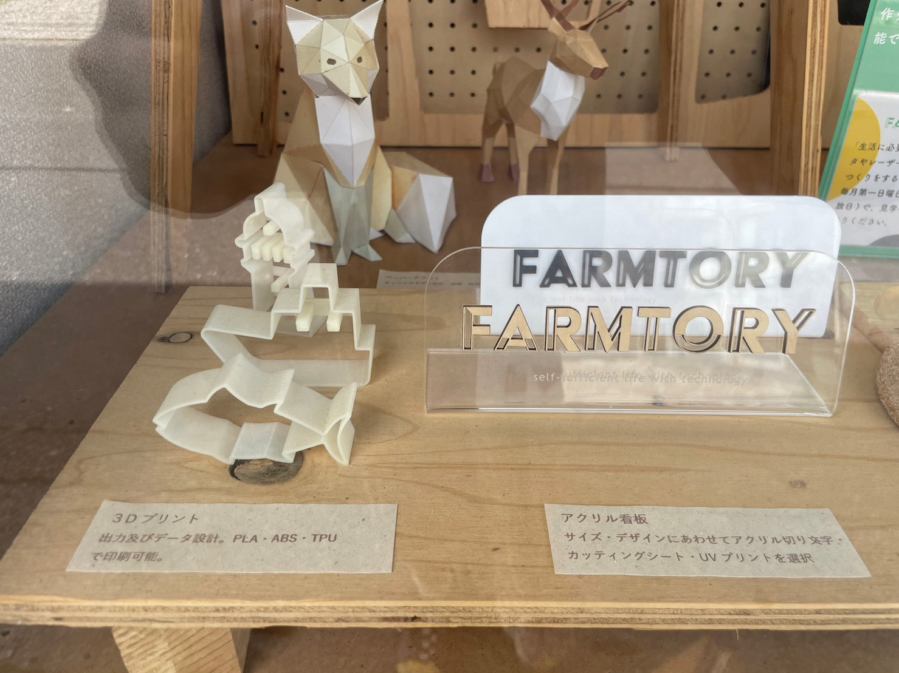
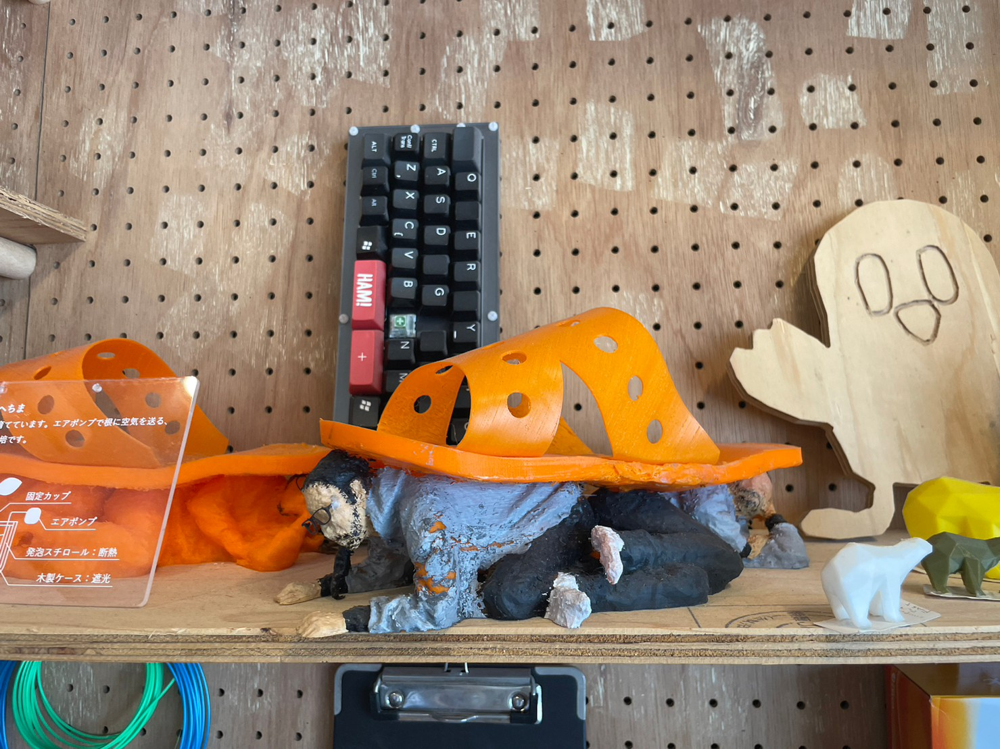
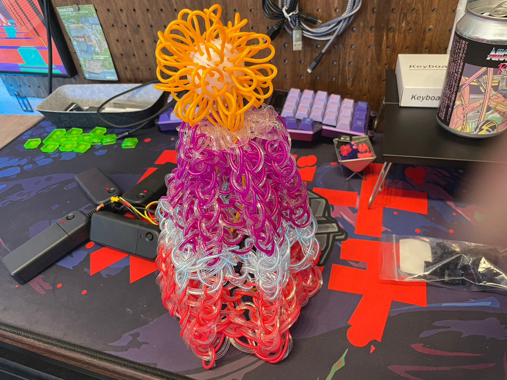
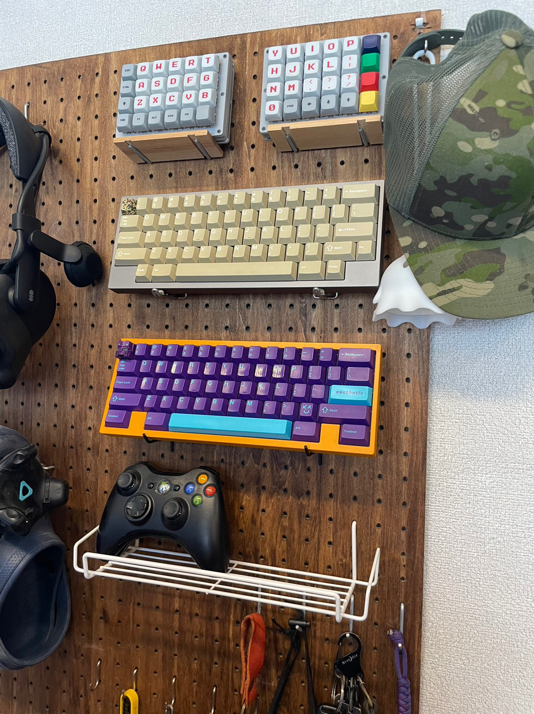
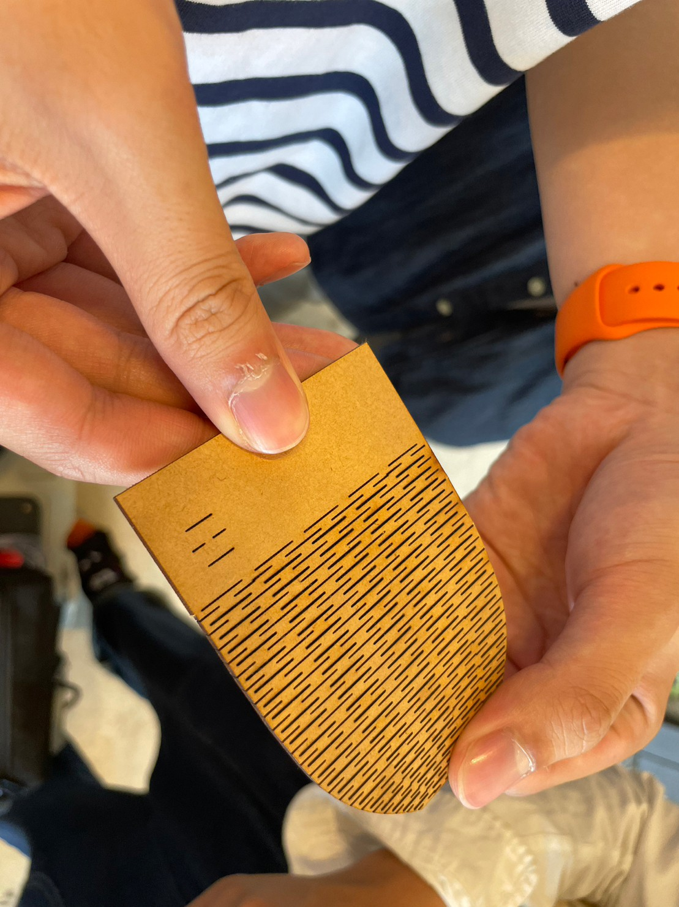

クリエイターのむらさきさんの運営する
三崎にあるものづくりスペースです

ファブラボみなとみらいで行われたユーザーミーティングから
むらさきさんに会い、見学させてもらえることになりました
商店街のように三崎の街に溶け込んだ場所でした。

むらさきさんと旦那さんで運営しているようです!
町の人がパッと見て興味が湧くように窓際にも作品が並べてありました
一般の方に向けたワークショップも行っているそうです

前から見たかったネオンを編んだ帽子を見させてもらいました
かわせみもこれ被って街歩きたい！

ここは自作キーボードやVRが充実しており面白かったです。
電子工作に興味が湧きました。
今回はむらさきさんの工房で見学させてもらいました。

靴下編み機のお披露目でみなとみらいに来ていただいて様々なアドバイスをもらいました。
実際に工房に行ってみて心からつくることを楽しんでいるのが伝わりました。
三崎のいいところも教えてもらい、SEAdsの皆で観光して帰りました。